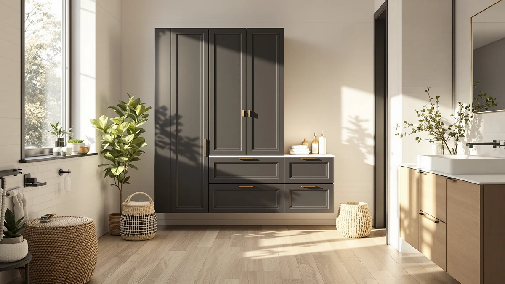

Quick Answer
The Amazer Tall Bathroom Storage Cabinet is a narrow, 70.87-inch bamboo tower with a rattan door that favors vertical storage over footprint, built for bathrooms with little floor space to spare. At $99.99 for an 11.81-by-11.81-inch base, it holds up well against the shorter ChooChoo, the wider Homhedy and the tabletop-style HITNET if height matters more to you than width.
Our pick: Amazer Tall Bathroom Storage Cabinet, $99.99 Check Price on Amazon
Things to Know Before You Buy
- The Amazer Tall Bathroom Storage Cabinet uses a bamboo frame with a woven rattan door, a lighter alternative to the metal-and-MDF combination common on budget bathroom towers.
- At 11.81 inches wide and 11.81 inches deep, it fits a narrow corner or the gap beside a toilet that a standard 24-inch-wide cabinet would never clear.
- Three adjustable shelves split the 70.87-inch frame between open display space up top and concealed storage behind the rattan door.
- The ChooChoo, Homhedy and HITNET alternatives covered below trade some of that height for a wider footprint and different door styles.
- Pricing across this comparison ranges from $98.99 to $102.99, a gap of only $4 between the cheapest and most expensive option.
This Amazer Bathroom Storage Cabinet Review looks at whether a tall, narrow bamboo tower can solve the space problem in a small bathroom, where a wide cabinet simply will not fit. Bathrooms rarely offer extra floor space, so a storage cabinet has to earn its footprint with real capacity, sturdy materials and a price that does not sting. At $99.99 and standing 70.87 inches tall on a base of only 11.81 by 11.81 inches, the Amazer promises exactly that combination. We compared its build, dimensions and pricing against three rival cabinets to see whether the listing and spec sheet back up what it promises for a small bathroom.
Tall bathroom storage cabinets solve a specific problem: you need vertical shelving that clears a towel bar without eating into walking space. The Amazer Tall Bathroom Storage Cabinet targets exactly that gap, competing directly with the ChooChoo Bathroom Floor Cabinet, the Homhedy 67" H Tall Bathroom and the HITNET Rattan Bathroom Storage Cabinet, all covered later as alternatives. The materials and dimensions tell us where the Amazer's build likely falls short, and who should consider a shorter or wider model instead.
Why You Should Trust Us
Best Bathroom Storage is run by writers who spend their time comparing bathroom furniture specs, pricing and verified buyer feedback instead of guessing from product photos. Ilane Tall, our home and bath expert, has covered dozens of storage cabinets, shelving towers and vanity organizers for this site. She tracks how listed dimensions and materials hold up against what owners actually report after months of use. For this Amazer Bathroom Storage Cabinet Review, we cross-checked the manufacturer's listed measurements against the ChooChoo, Homhedy and HITNET alternatives, and we did not take the marketing copy at face value. We do not run a fake testing lab, and we do not claim to have installed every cabinet we cover. Instead, we dig through verified listings and compare specs line by line to catch when a description overstates what a product can realistically deliver.
Our Research Experience
We did not put the Amazer Tall Bathroom Storage Cabinet in a bathroom ourselves. Instead, we compared its listed specifications, material description and price against three competing tall cabinets, and we weighed what the manufacturer's own measurements and feature list claim about the bamboo build. The listing rates the frame as waterproof and able to hold heavy loads without bending, a common claim for bamboo bathroom furniture in this price bracket, though manufacturer durability claims deserve some caution until a pattern of owner feedback confirms them. We lined that up against the raw dimensions and price of the ChooChoo, Homhedy and HITNET alternatives to see where the Amazer earns its spot in this Amazer Bathroom Storage Cabinet Review and where a different build makes more sense for your bathroom.
Overview & Specs

Amazer Tall Bathroom Storage Cabinet
What we like
- 11.81-inch by 11.81-inch footprint fits narrow corners and gaps beside a toilet
- Bamboo frame rated waterproof and able to hold heavy loads without bending, per the manufacturer
- Three adjustable shelves split the cabinet between open display and concealed rattan-door storage
- Priced at $99.99, competitive with the three alternatives in this comparison
Flaws but not dealbreakers
- At 70.87 inches, it needs real ceiling clearance that shorter bathrooms may not have
- The narrow 11.81-inch depth limits how much you can stack on each shelf compared to the wider ChooChoo and Homhedy
- No verified owner reviews are available yet to confirm how the bamboo finish holds up over time
| Material | Metal / wood |
| Size | 11.81 x 11.81 x 70.87 inches |
The Amazer Tall Bathroom Storage Cabinet is built around a bamboo frame with a woven rattan door, a lighter-weight alternative to the metal-and-MDF combination common on cheaper towers. At 11.81 inches wide and 11.81 inches deep, it is narrow enough to slide into the gap beside a toilet or into a corner that a wider cabinet would not clear. That footprint, paired with a height of 70.87 inches, gives it the tallest profile in this comparison by a wide margin, closer to a bookshelf than a squat bathroom cabinet.
The manufacturer rates the bamboo construction as waterproof and resistant to bending under heavy loads, a claim worth taking seriously given how often particleboard towers warp in a humid bathroom. Three adjustable shelves let you split the cabinet between an open display section up top and concealed storage behind the rattan door lower down, which suits anyone who wants both decor and hidden storage in one footprint. At $99.99, it lands in the middle of the price range covered in this Amazer Bathroom Storage Cabinet Review, cheaper than the HITNET option below despite offering far more vertical storage.
What We Liked
Build material matters most in this Amazer Bathroom Storage Cabinet Review. Bamboo is a sturdier, more water-resistant choice than the particleboard used in many budget bathroom towers, and the manufacturer backs that up with a stated load rating that should hold up to daily use without sagging. The narrow footprint is the other clear strength: at 11.81 by 11.81 inches, the Amazer fits spaces that would reject a standard 24-inch-wide cabinet, and its 70.87-inch height makes it the tallest option in this entire comparison. Pricing also compares well. At $99.99, it sits almost exactly between the ChooChoo and Homhedy options and well under the HITNET, despite offering more vertical storage than either.
What Could Be Better
Height is the main trade-off. At 70.87 inches, the Amazer needs real ceiling clearance, and anyone with a sloped bathroom ceiling or a shelf-mounted light fixture overhead should measure carefully before buying. The narrow 11.81-inch depth also means each shelf holds less than the wider ChooChoo or Homhedy alternatives, so you trade capacity per shelf for a smaller footprint. There is no verified owner feedback on this specific listing yet, which means the waterproof and load-bearing claims come from the manufacturer alone and have not been checked against months of real bathroom humidity.
A rattan door also scratches and dents more easily than a solid wood or metal panel, something worth considering if you have young kids or expect the cabinet to take daily bumps. None of this changes the core appeal of the design, but know it going in if you want the finish to still look new after a year.
Who Is It For?
The Amazer Tall Bathroom Storage Cabinet fits a household with a small bathroom and a specific gap to fill rather than an entire wall to furnish. Its narrow 11.81-by-11.81-inch base makes it a strong pick for corners, the space beside a toilet, or a hallway closet doubling as linen storage. It is not the right choice if you need a wide cabinet with multiple doors and a deep interior for a family's worth of towels. In that case, the wider ChooChoo or Homhedy models covered below make better use of floor space for roughly the same price.
Renters and apartment dwellers also stand to benefit, since the cabinet is freestanding and does not require drilling into a wall. Anyone who has struggled to fit a standard 24-inch-wide cabinet into a cramped bathroom will notice the difference the extra height makes once storage moves vertical instead of horizontal. A household that needs heavy-duty daily storage for several people, on the other hand, will likely find the HITNET's wider tabletop and dual shelves more practical.
Alternatives to Consider
If the Amazer's 70.87-inch height or narrow bamboo build doesn't match what your bathroom needs, these three alternatives cover the most common trade-offs: a wider black floor cabinet from ChooChoo, a barn-door tower from Homhedy, and a rattan tabletop cabinet from HITNET. Each one trades height for width or storage style in a different way, so match your own measurements before picking between them.

Also Great
ChooChoo Bathroom Floor Cabinet with
A wider 23.62-inch cabinet with a double-wire door design and five-height adjustable shelves, built for bathrooms that have width to spare instead of ceiling height.
$99.99
Check Price on Amazon
Best Value
Homhedy 67" H Tall Bathroom
Two reversible barn doors and a drawer on a 67-inch frame, a better fit if you want closed storage plus a dedicated drawer for small items.
$98.99
Check Price on Amazon
Premium Choice
HITNET Rattan Bathroom Storage Cabinet
A rattan tabletop cabinet with an open display shelf and two-tier hidden storage, suited to anyone who wants surface space as much as enclosed shelving.
$102.99
Check Price on AmazonFrequently Asked Questions
Is the Amazer Tall Bathroom Storage Cabinet sturdy enough for daily use?
The manufacturer rates the bamboo frame as waterproof and able to hold heavy loads without bending, a stronger baseline claim than the particleboard used in many budget towers. There is no verified owner feedback yet on this specific listing, so treat that durability claim as a manufacturer spec until a track record builds up.
How does the Amazer compare to the Homhedy 67" H Tall Bathroom?
The Homhedy stands about 4 inches shorter but is considerably wider at 15.7 inches, with two barn doors and a drawer instead of a rattan door and open shelving. Choose the Amazer if footprint matters more than extra width, and the Homhedy if you want closed storage plus a dedicated drawer.
What comes with the Amazer cabinet, and how is it assembled?
The listing describes a freestanding bamboo frame with a rattan door and three adjustable shelves, shipped as a single unit. As with most flat-pack bathroom furniture in this price range, expect some assembly, though this specific listing does not yet have verified owner feedback describing how long it takes.
Final Verdict
This Amazer Bathroom Storage Cabinet Review comes down to a straightforward trade-off: a narrow bamboo tower with real height against three wider alternatives that trade some of that vertical storage for extra width or closed-door capacity. For a small bathroom with a tight footprint to fill, the Amazer is the practical pick, and its waterproof-rated bamboo build gives it an edge over heavier particleboard towers at a similar price. If your bathroom has more floor space than ceiling height to spare, the ChooChoo or Homhedy alternatives covered above make better use of it. Either way, Amazer is the brand worth starting with if a narrow footprint is your main constraint.